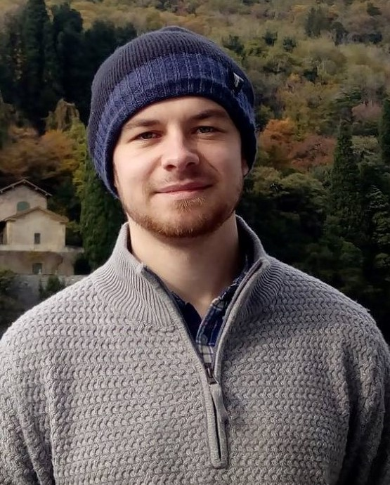

I am currently a PhD Student at the Computer Science department of University of Liverpool. My research focus is on improving methods for structured prediction, transfer learning and multi-task learning in natural language. I'm apart of the Data Mining and Machine Learning (DMML) Research Group and the Natural Language Processing Group.